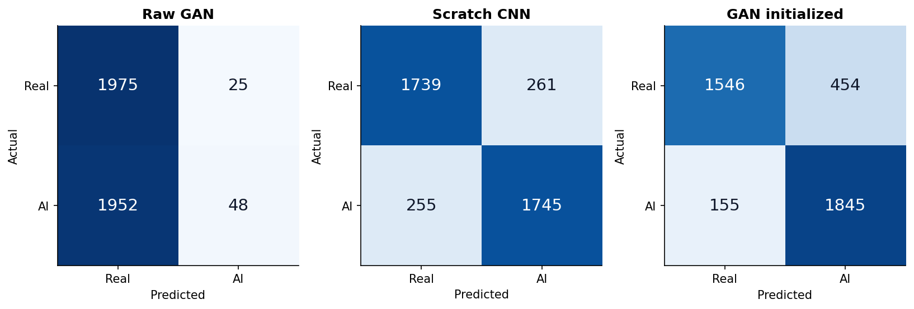
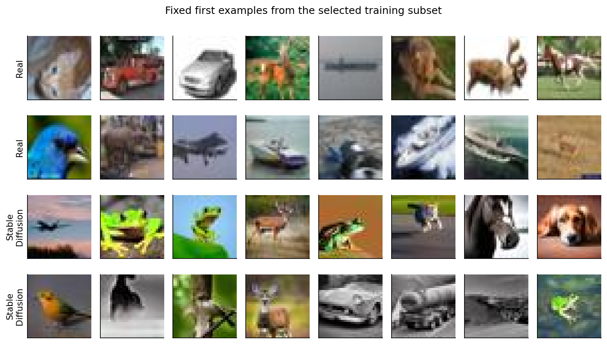
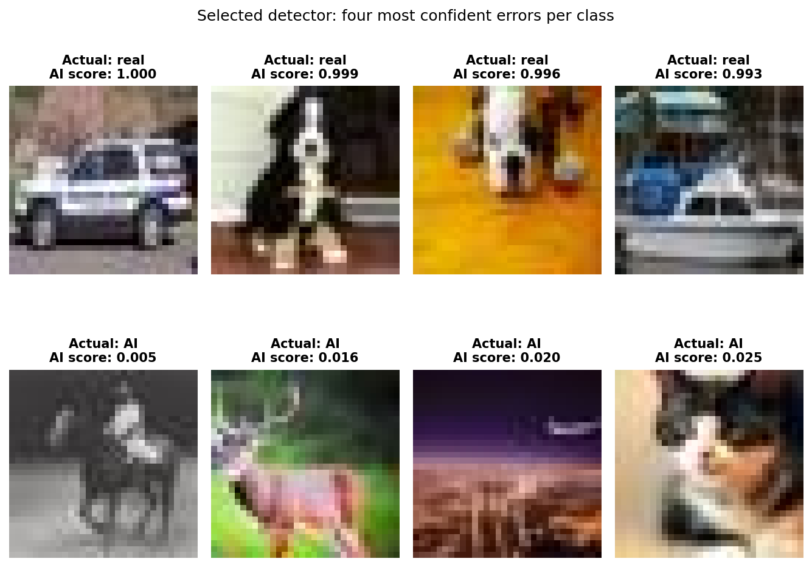
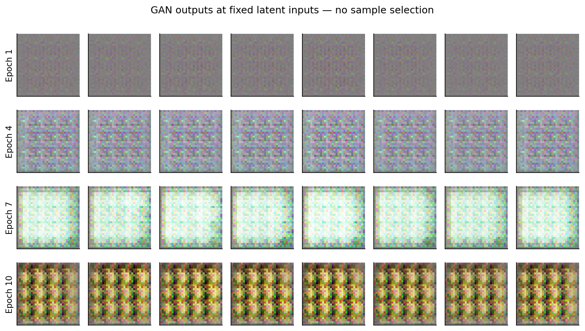
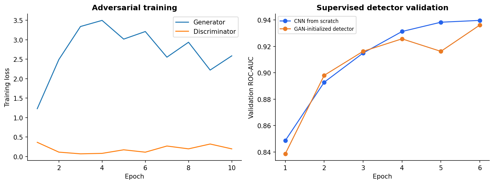
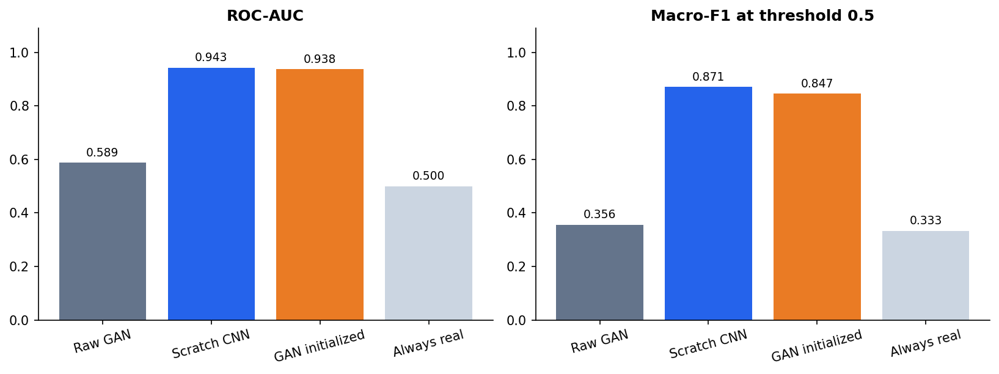
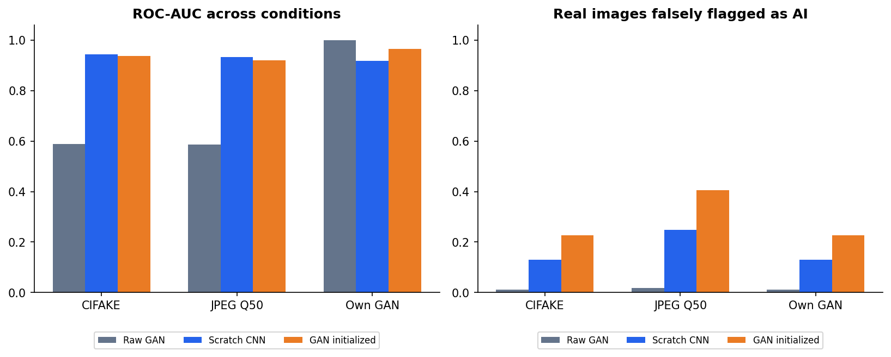
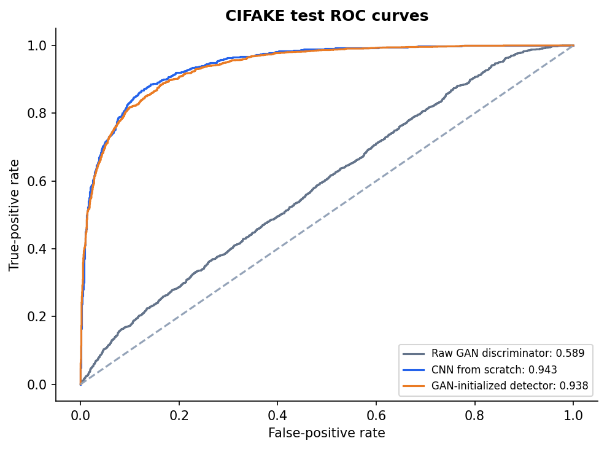

A TensorFlow study of transfer from a small DCGAN to CIFAKE diffusion-image detection.
| model | roc_auc | macro_f1 | accuracy |
|---|---|---|---|
| Raw GAN discriminator | 0.5890 | 0.3564 | 0.5058 |
| CNN from scratch | 0.9433 | 0.8710 | 0.8710 |
| GAN-initialized detector | 0.9381 | 0.8469 | 0.8478 |
| Always-real baseline | 0.5000 | 0.3333 | 0.5000 |
GAN pretraining did not improve the primary test result in this one-seed study. Generalization beyond this small benchmark is unproven. See README.md for the full protocol and limitations.







